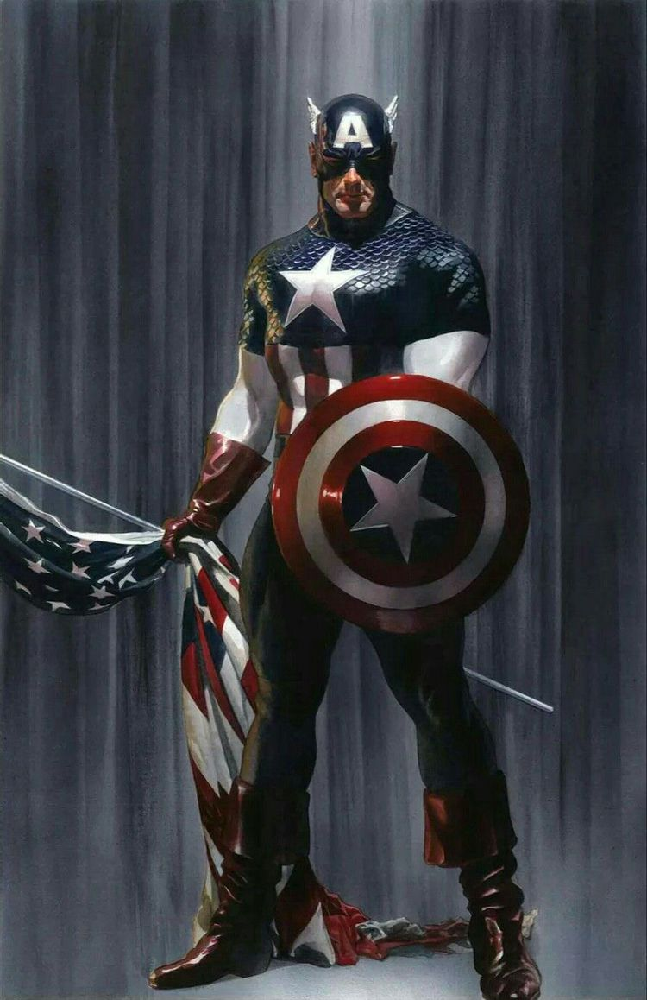

캡틴 아메리카의 '캡틴'은 초창기 코믹스에서는 말 그대로 미국의 대장이라는 뉘앙스로 쓰였으나[3], 시간이 흘러 역사적, 군사적인 요소가 캐릭터에게 추가되면서 미합중국 육군 장교 계급으로서의 '대위'의 의미를 함께 띄는 모습으로 변했다. 그를 지칭할 때 흔히 쓰이는 「캡틴」(혹은 줄여서 '캡')은 그의 계급을 의미하는 뜻이기도 한 것이다. 또한 캡틴이라는 말에는 어벤져스의 넘버 원이라는 의미도 포함한다. 캡틴 아메리카는 어벤저스의 가장 전통적인 지휘관이다.
